Laboratorio 1
Fecha: Lunes 28 de Agosto
En este laboratorio, pusimos en práctica varios conceptos que aprendimos en clase, enfocándonos especialmente en cuatro tipos específicos de circuitos: Simple, Serie, Paralelo y un circuito básico con un pulsador.
Circuito Simple
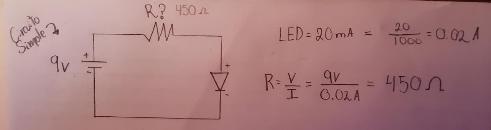
En la sigueinrte imagen lo que se hizo fue basicamente implemnetar lo del la imgen anrtreorto en este caso se aplico lo de la imagen nada mas se implento dos resitencias de 220 Ω ya que no se tenian de 450 Ω.
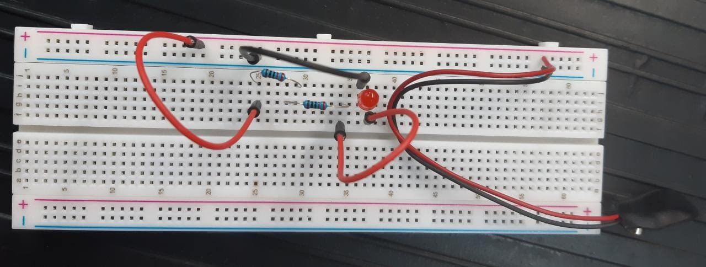Circuito en serie
En este caso, lo que se hizo fue implementar un circuito en serie utilizando un LED adicional. Al realizar esta configuración, se recalculó la fórmula que en este caso dio como resultado el uso de una resistencia de 225 Ω. Además, se incluye la fórmula para calcular la resistencia en un circuito en serie.
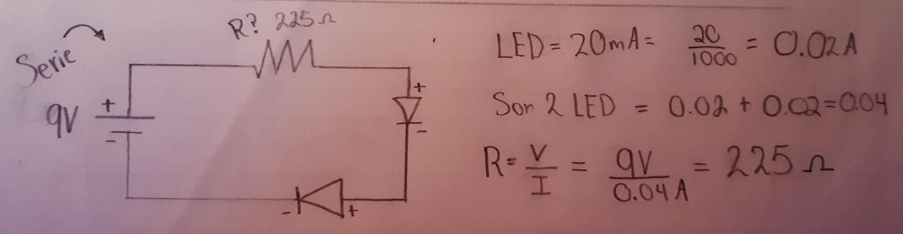
Circuito paralelo
En la siguiente imagen, se representa un circuito en paralelo junto con un circuito que consta de 4 resistencias de 220 ohmios, una para cada LED.
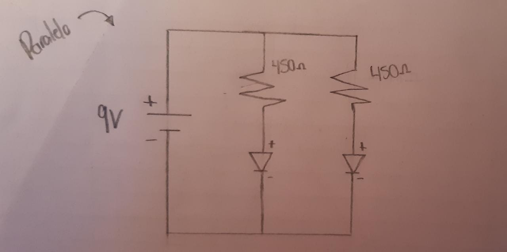En la imagen que se presenta a continuación, se lleva a cabo la implementación física de un circuito en paralelo. En este caso, se conectan múltiples componentes electrónicos de manera simultánea, permitiendo que la corriente fluya independientemente a través de cada uno de ellos.
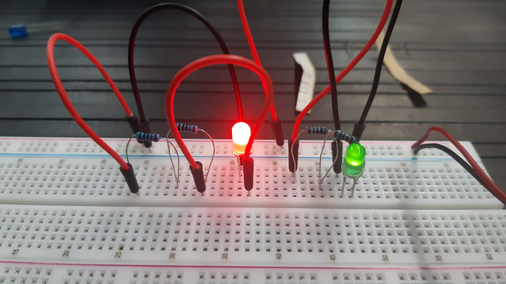Aquí se presenta otro caso ilustrativo de un circuito en paralelo, donde ambos LEDs se encuentran conectados en una disposición paralela.
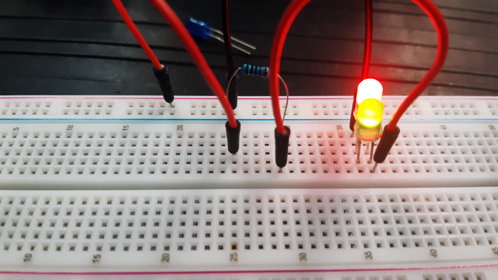Circuito Simple con pulsador
Para concluir el laboratorio, se llevó a cabo la implementación de un circuito en serie con un interruptor. En este caso, al presionar el interruptor, se activa la iluminación del LED.
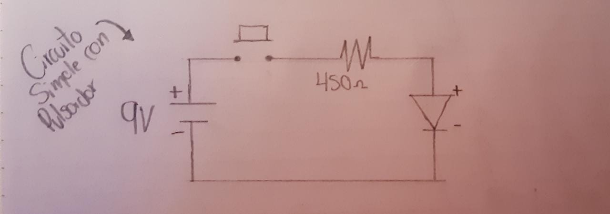Como complemento, se incorpora un video que proporciona una visualización detallada de la funcionalidad del circuito. Al presionar el botón, se puede observar cómo la señal eléctrica activa y enciende la LED.
Laboratorio 2
Fecha: Lunes 11 de Septiembre
En este laboratorio se creo circuitos de manera práctica. Todos los circuitos desarrollados en este laboratorio incorporaron un regulador de voltaje 7805CT, garantizando un resultado estable de 5V. La práctica se enfocó en la implementación de circuitos con botones para realizar operaciones lógicas de tipo AND y OR. Posteriormente, llevamos a cabo la transición hacia la implementación de estos mismos circuitos utilizando componentes electrónicos especializados para compuertas lógicas AND y OR.
Diagrama de los circuitos
Ahora, procedimos a implementar los dos circuitos básicos que esencialmente son una compuerta lógica AND y otra OR, pero sin la utilización de las compuertas lógicas específicas, tales como el 7408 y el 7432. Este enfoque nos permitió consolidar y aplicar los principios lógicos aprendidos previamente, construyendo manualmente los circuitos sin depender de componentes electrónicos especializados.
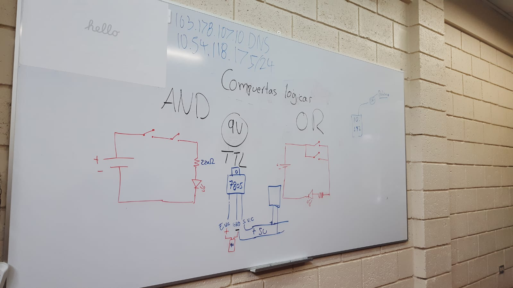AND con botones
En este caso, se lleva a cabo la construcción de una puerta lógica AND mediante el uso de botones. Cuando se presiona el primer botón, se permite el flujo de electricidad al segundo botón. Sin embargo, la LED solo se encenderá cuando ambos botones sean presionados simultáneamente, demostrando así la operación lógica AND, donde la salida solo es activada cuando todas las entradas son verdaderas.
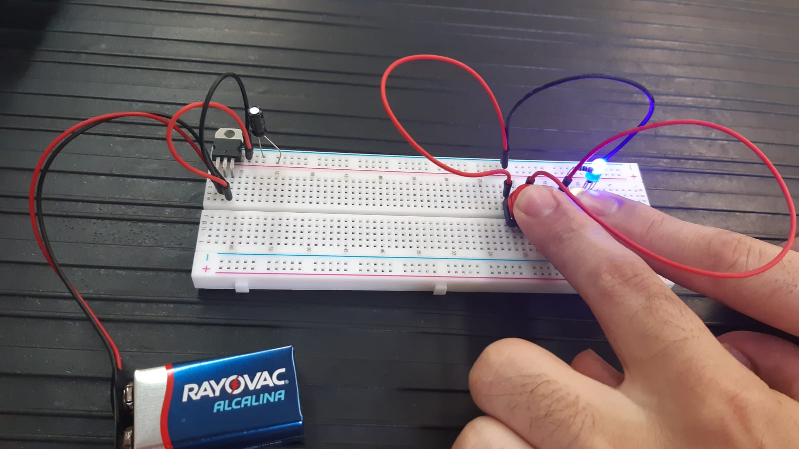OR
En este escenario, se lleva a cabo la construcción de una puerta lógica OR utilizando botones. Si cualquiera de estos dos botones es presionado, se permite el flujo de electricidad hacia la LED, lo que resulta en su encendido. Este comportamiento refleja la operación lógica OR, donde la salida se activa si al menos una de las entradas es verdadera.
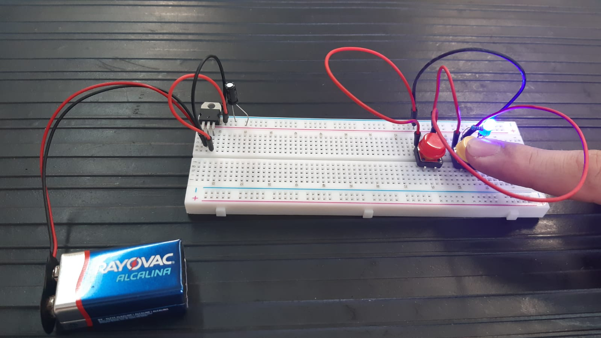Cicuito "OR" solo presionando el pulsador amarillo
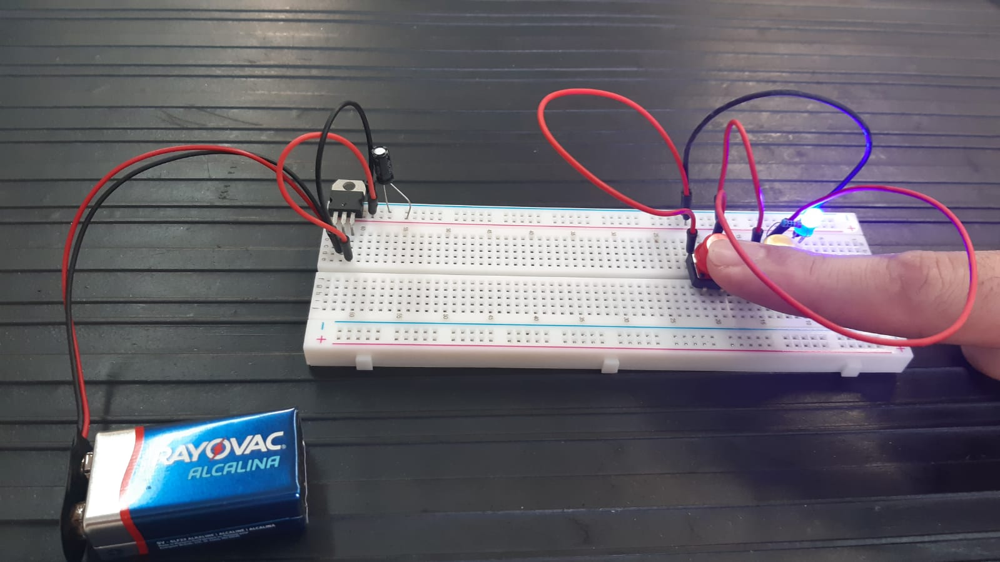
Cicuito "OR" solo presionando el pulsador rojo
AND (con compuerta)
En este caso, procedemos a implementar la compuerta lógica 7408, utilizando dos entradas provenientes de los botones y generando una salida hacia la LED. Esta configuración permite observar la operación lógica AND realizada por la compuerta 7408, donde la LED se iluminará solo cuando ambos botones sean presionados simultáneamente, demostrando así el funcionamiento de la puerta lógica. 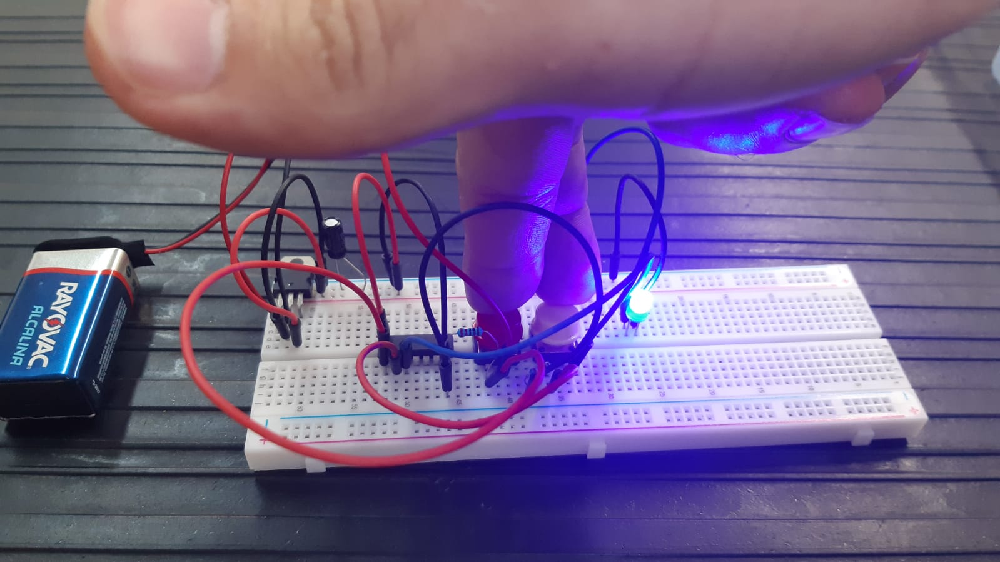OR (con compuerta )
En este caso, procedemos a implementar la compuerta lógica 7432, utilizando dos entradas provenientes de los botones y generando una salida hacia la LED. Esta configuración permite observar la operación lógica OR realizada por la compuerta 7432, donde la LED se iluminará si alguno de los dos botones, o ambos, son presionados. De esta manera, se demuestra el funcionamiento de la puerta lógica OR mediante el uso de componentes electrónicos específicos.
Presionando el pulsador amarillo
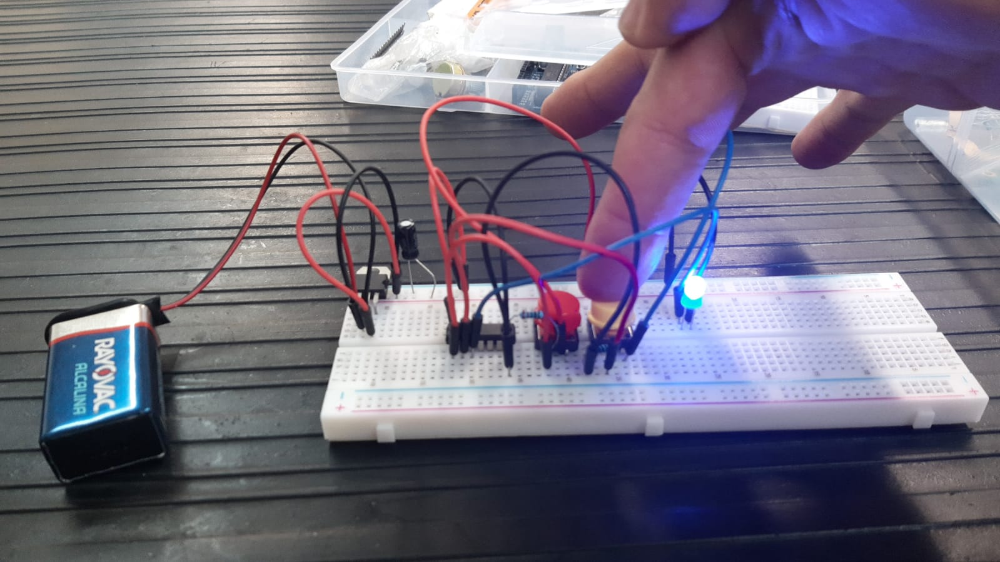Presionando el pulsador rojo
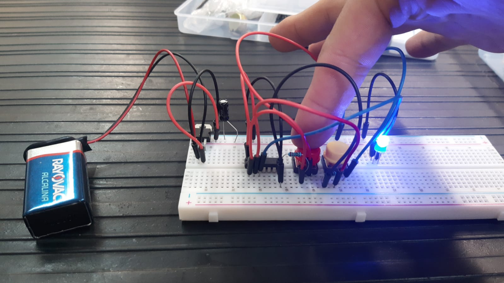Circuitos de Funciones
Realizamos un circuito basado en dos funciones brindadas por el profesor, las cuales tuvimos que simplificar para despues realizar el circuito y realizarlo en la protoboard.
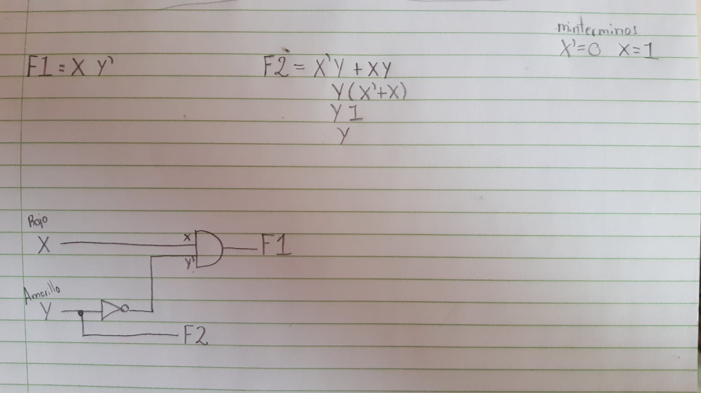
Funcion 1 (Con solo pulsador X/rojo)
Funcion 1 (Presionando pulsadador X y Y al mismo tiempo)
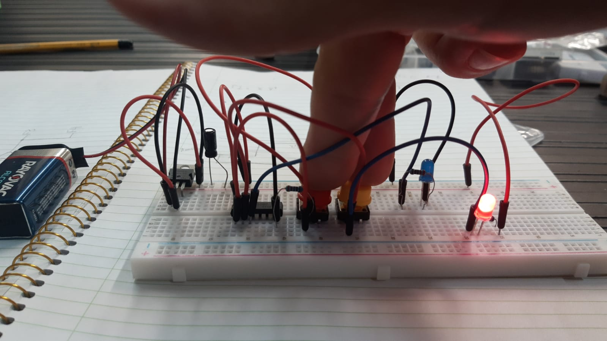Funcion 2.
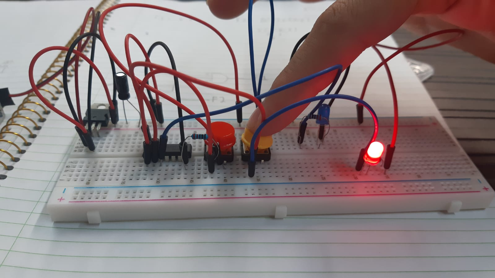Laboratorio 3
Fecha: Lunes 25 de Septiembre
En este laboratorio, continuamos explorando el uso de compuertas lógicas que serian un AND y un XOR, centrándonos esta vez en la construcción de un medio sumador mediante su implementación. Este proceso implica la utilización de compuertas lógicas para realizar operaciones de suma binaria, ofreciendo una perspectiva práctica de cómo estas compuertas contribuyen al diseño y funcionamiento de circuitos más complejos.
Diagrama (Medio sumador)
Con base en la teoría aprendida en clase, un medio sumador está compuesto por una compuerta XOR y una compuerta AND. Estos elementos combinados conforman la estructura fundamental de un medio sumador, permitiendo realizar operaciones de suma binaria de manera eficiente y lógica.
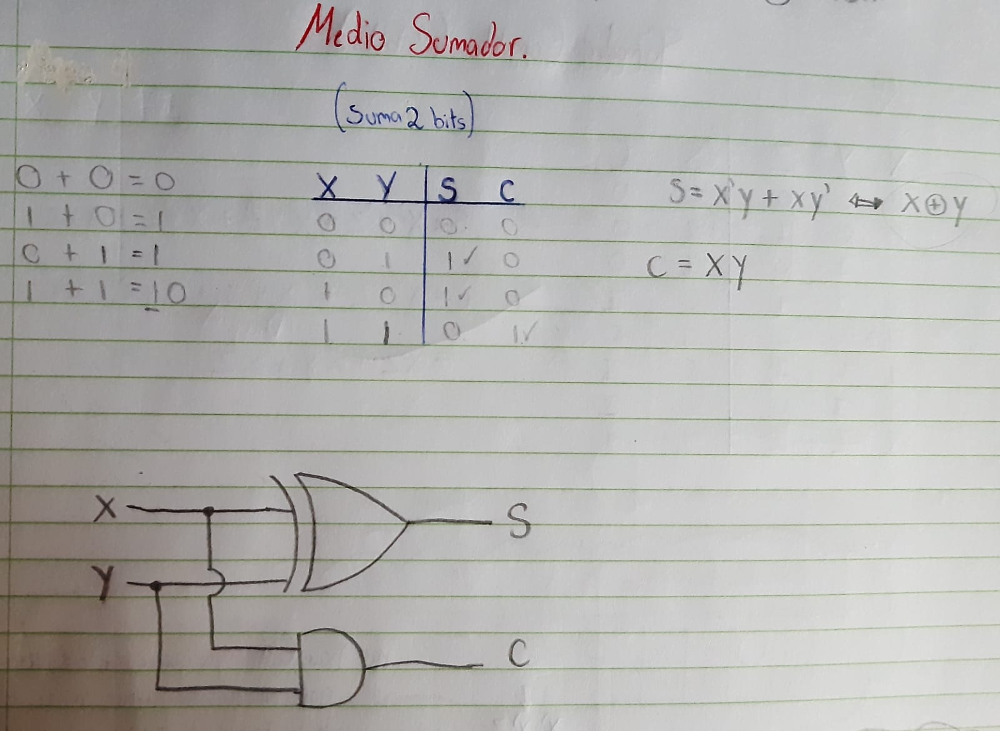En la siguiente imagen, se puede observar la implementación de un medio sumador mediante el uso de dos LEDs para simular los valores binarios 1 y 0. Se han incorporado dos compuertas lógicas: una compuerta XOR para determinar el resultado de la suma y una compuerta AND que gestiona el acarreo. La LED roja representa el resultado de la suma, mientras que la LED verde indica la presencia o ausencia de acarreo. Esta representación visual ofrece una visión clara de cómo las compuertas lógicas contribuyen al proceso de suma binaria en un medio sumador.
Diagrama (Sumador completo)
Sumador completo teoria.
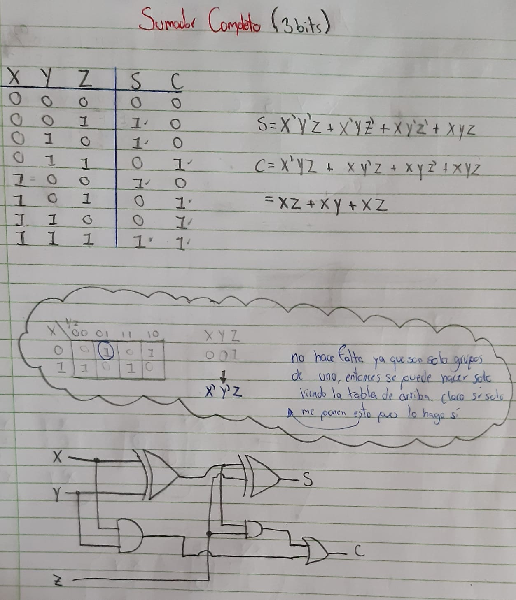En esta imagen, se muestra un sumador completo que utiliza compuertas AND y XOR. En este caso, se ha tomado la estructura anteriormente descrita, pero se ha agregado un botón adicional para permitir la suma de 3 bits. Este diseño ampliado proporciona una visión práctica de cómo se pueden expandir y personalizar los sumadores utilizando componentes lógicos adicionales para abordar diferentes requerimientos en la manipulación de bits.
Diagrama (Restador binario)
Teoria vista en clase

En este caso, se presenta un restador en el cual se utilizó el sumando anterior, pero se le añadió la compuerta NOT. Esta adición de la compuerta NOT se basa en los conceptos previamente discutidos en clase, permitiendo explorar cómo se puede modificar y ampliar un diseño existente para implementar funciones adicionales, en este caso, la operación de resta.
Laboratorio 4
Fecha: Miércoles 8 de octubre
En este laboratorio se realizó la conexión entre el controlador(Previamente ensamblado siguiendo los pasos del profesor y con el codigo cargado) y el "Puente H".
• Un Puente en H es un circuito electrónico que generalmente se usa para permitir a un motor eléctrico DC girar en ambos sentidos, avance y retroceso. Son ampliamente usados en robótica y como convertidores de potencia.
• El motor DC 12V es un motor que sirve para diversas aplicaciones, tiene una alimentación de 12V y puede generar revoluciones de hasta 5300 RPM
Seguidamente se alimento al "Puente H" con 5v el cual a su vez alimentaba a la protoboard con el controlador.
Se utizó el codigo cargado en el controlar el cual encendia y apaga un led repetitivamente esto con el fin de observar al motor DC en movimiento el cual fue el obectivo del laboratorio.
A continuación se muestra el video donde se muestra el laboratorio:
Laboratorio 5
Fecha: Miércoles 1 de Noviembre
En este laboratorio se realizó la conexión entre el controlador(Previamente ensamblado siguiendo los pasos del profesor y con el codigo cargado) y el "Puente H".
• Un Puente en H es un circuito electrónico que generalmente se usa para permitir a un motor eléctrico DC girar en ambos sentidos, avance y retroceso. Son ampliamente usados en robótica y como convertidores de potencia.
• El motor DC 12V es un motor que sirve para diversas aplicaciones, tiene una alimentación de 12V y puede generar revoluciones de hasta 5300 RPM
Seguidamente se alimento al "Puente H" con 5v el cual a su vez alimentaba a la protoboard con el controlador.
Se utizó el codigo cargado en el controlar el cual encendia y apaga un led repetitivamente esto con el fin de observar al motor DC en movimiento el cual fue el obectivo del laboratorio.
A continuación se muestra el video donde se muestra el laboratorio:
investigación
Fecha: Lunes 6 de Noviembre
Este mas que un laboratrio fue una investigación que tuvo como propósito documentar el proceso de implementación de una comunicación serial efectiva entre un microcontrolador ATMEGA, específicamente en la placa Arduino, y un ordenador que ejecuta una aplicación desarrollada en Java. El objetivo principal de esta investigación fue comprender y describir cómo lograr esta comunicación de manera eficaz para un propósito específico. Además de abordar los aspectos teóricos de esta implementación, se presenta una implementación práctica en forma de juego, demostrando la utilidad de esta conexión en aplicaciones interactivas, se presenta una implementación práctica en forma de juego.
A continuación se muestra imagenes donde se muestra la investigación en su forma práctica:
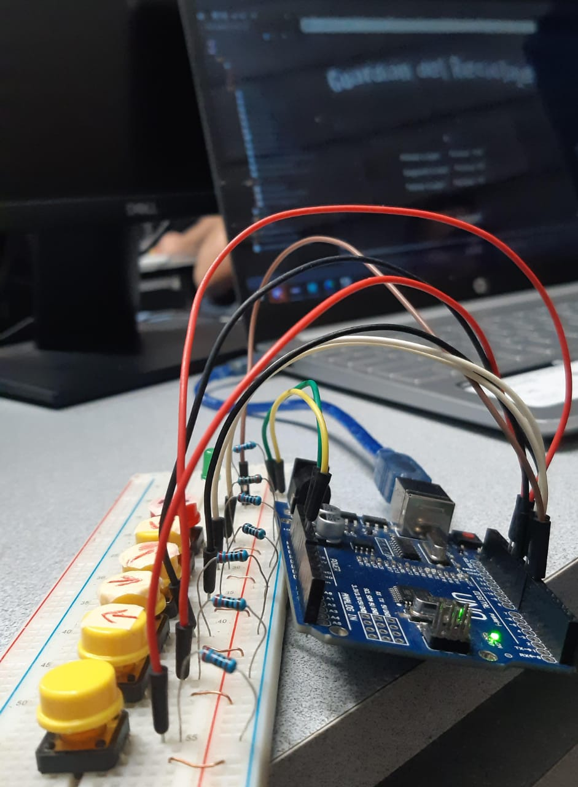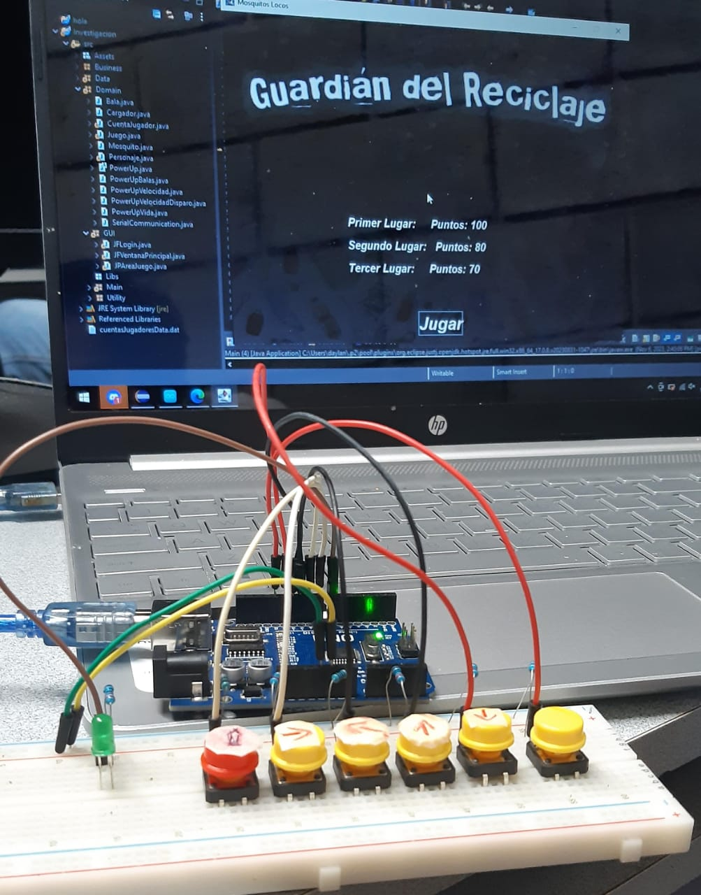